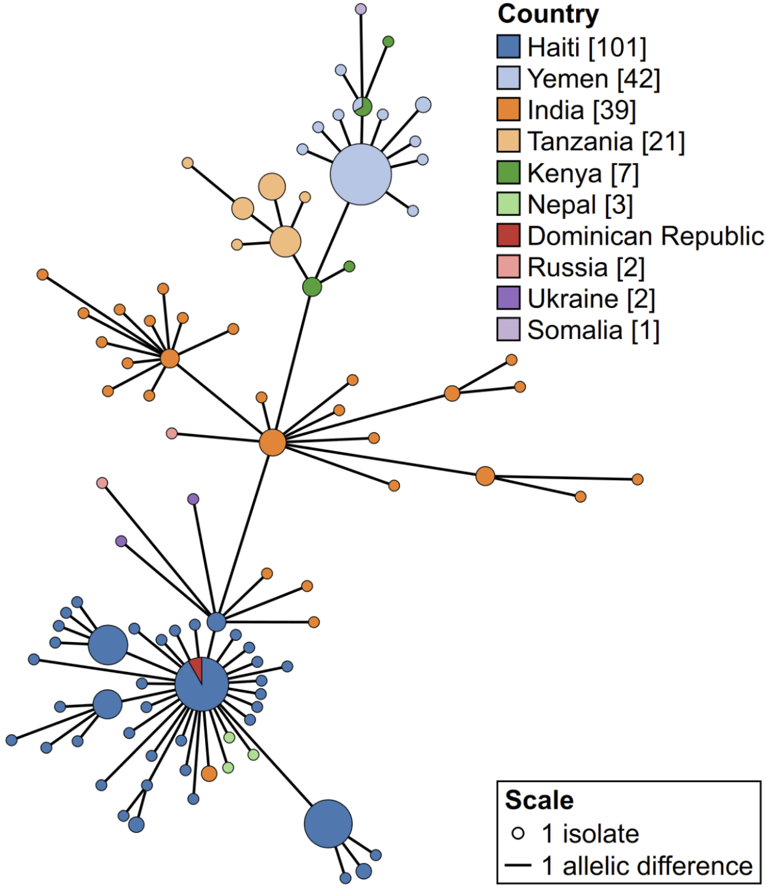

11 MLST
- Describe what multilocus sequence typing (MLST) is and its use for genomic surveillance.
- Perform MLST using both a web-based application and dedicated command line software.
- Analyse and assess MLST findings analysis and their reliability considering assembly accuracy.
11.1 Multilocus Sequence Typing (MLST)
MLST has become a common method for identifying and characterising pathogenic bacterial strains. It uses a specific set of “housekeeping genes” linked to the bacteria of interest. These genes help categorize isolates into groups based on the changes they carry within these genes. MLST aids in identifying changes in the genetic sequences of isolates during new outbreaks, which adds to other methods like serotyping for classifying strains. This is why public health labs often rely on MLST to assist officials in comprehending and controlling disease outbreaks.

Groups of isolates that share similar mutation patterns in these housekeeping genes are called sequence types. The PubMLST project curates and maintains these sequence types. For example, sequence type 69 (ST69) is a common type linked to O1 El Tor strains in the current pandemic (7PET). Although this method might seem a bit old-fashioned in the age of genomic analysis (as it focuses on only 7 genes), it offers a uniform and comparable way to categorize strains across different labs and locations.
This sequence typing approach helps determine whether any of our tested isolates are harmful. V. cholerae typing is done from seven housekeeping genes (adk, gyrB, metE, mdh, pntA, purM, and pyrC). Using this approach, we aim to determine which pandemic strain types dominate our isolates or whether we’ve stumbled upon new strain types. This analysis can be accomplished through Pathogenwatch or by using a separate command line tool called mlst.
11.2 MLST with Pathogenwatch
Pathogenwatch uses PubMLST to run its typing analysis (details here) and the results can be seen on the collection view page (Figure 11.1).

All of the sequence types determined by MLST in our samples seem to be novel (this is indicated by an * before the name). This seems very surprising, as there must be other strains similar to ours identified in recent outbreaks. There are several reasons why we may have obtained this result:
- The PubMLST database may not contain up-to-date sequence types for most recent Vibrio lineages circulating worldwide.
- Even if only one of the 7 genes used for typing contains a mutation, MLST considers it to be a different type from the one in the database.
- Because we are using Nanopore data, which has relatively high error rates, we may have some errors in our assemblies, which now affects this analysis.
We start our analysis by activating our software environment, to make all the necessary tools available:
mamba activate typing11.3 MLST with command line
Running MLST from the command line can be done with a single command:
# create output directory
mkdir results/mlst
# run mlst
mlst --scheme vcholerae results/assemblies/*.fasta > results/mlst/mlst_typing.tsvThis command outputs a tab-delimited file (TSV), which we can open in a spreadsheet software such as Excel. Here is the result for our samples:
results/assemblies/isolate01.fasta vcholerae - adk(7) gyrB(11) mdh(~133) metE(37) pntA(12?) purM(1) pyrC(20?)
results/assemblies/isolate02.fasta vcholerae - adk(7) gyrB(~11) mdh(4) metE(37) pntA(227?) purM(1) pyrC(20?)
results/assemblies/isolate03.fasta vcholerae - adk(7) gyrB(11) mdh(~121) metE(37) pntA(227?) purM(1) pyrC(20?)
results/assemblies/isolate04.fasta vcholerae - adk(7) gyrB(120?) mdh(~4) metE(37) pntA(227?) purM(1) pyrC(20?)
results/assemblies/isolate05.fasta vcholerae - adk(7) gyrB(120?) mdh(~121) metE(37) pntA(227?) purM(1) pyrC(~20)
results/assemblies/isolate06.fasta vcholerae - adk(7) gyrB(195?) mdh(~121) metE(37) pntA(227?) purM(1) pyrC(20?)
results/assemblies/isolate07.fasta vcholerae - adk(7) gyrB(195?) mdh(~121) metE(37) pntA(-) purM(1) pyrC(20?)
results/assemblies/isolate08.fasta vcholerae - adk(7) gyrB(120?) mdh(209?) metE(37) pntA(227?) purM(172?) pyrC(20?)
results/assemblies/isolate09.fasta vcholerae - adk(7) gyrB(120?) mdh(~121) metE(~37) pntA(12?) purM(176?) pyrC(20?)
results/assemblies/isolate10.fasta vcholerae - adk(7) gyrB(195?) mdh(~121) metE(37) pntA(227?) purM(1) pyrC(20?)We get a column for each of the 7 genes used for Vibrio sequence typing, with the gene name followed by the allele number in parenthesis. The allele number is an identifier used by PubMLST, and it means that allele has a specific sequence with a certain set of variants (search for alleles here). For example, adk(7) corresponds to allele 7 of the adk gene.
The command line version of mlst also reports when an allele has an inexact match to the allele in the database, with the following notation (copied from the README documentation):
| Symbol | Meaning | Length | Identity |
|---|---|---|---|
n |
Exact intact allele | 100% | 100% |
~n |
Novel full length allele similar to n |
100% | ≥ --minid |
n? |
Partial match to known allele | ≥ --mincov |
≥ --minid |
- |
Allele missing | < --mincov |
< --minid |
n,m |
Multiple alleles |
The third column of the output (which in our case is - for all samples) would indicate if our samples matched a known sequence type from the PubMLST database. It seems like all our samples are “new” sequence types, i.e. their profile doesn’t exactly match any of the curated types. We can further interpret our results by searching for their closest-matching profiles on the PubMLST website. If we search on that page for the profiles of each isolate, we will find that they always come closest to the sequence type ST69, which includes the pathogenic O1 El Tor strain. For example, “isolate02” matches ST69 for six out of the seven genes.
While somewhat inconclusive about an exact sequence type, this analysis further reinforces that we are faced with pathogenic strains of Vibrio cholerae. In the next chapter we will turn to phylogenetic analysis to further investigate the relationship between these strains and other previously sequenced strains of this species.
11.4 Exercises
For these exercises, you can either use the dataset we provide in Data & Setup, or your own data. You also need to have completed the genome assembly exercise in Section 8.4.
Following from the Pathogenwatch exercise in Section 10.4, open the collection that you created for your samples and answer the following questions:
- Which sequence type were your sequences assigned to?
- How do the results compare with output from the command line version of the software? (You need to complete the previous exercise to answer this question)
First, we make sure to be on the collection view screen for our “AWD Workshop - Ambroise 2023” collection created earlier (Section 10.4). In case you don’t have it open, you can get it from the account menu (top-left button, as shown on image below) and click on “My Collections”. Your collection should be listed and you can click on “View Colection”.

Once inside the collection view, the MLST table is usually the one shown by default, or you can choose it from the drop-down menu on the top-left of the table:

From this table we can see that:
- All of our samples were assigned a new type. This is indicated by the
*in theSTcolumn. - The results are very similar to the command line version of the tool, except we don’t get information about similar alleles that were matched to the new gene alleles found.
11.5 Summary
- MLST (Multilocus Sequence Typing) is a genotyping method used to identify and categorize bacterial strains based on the sequences of specific housekeeping genes.
- It aids in tracking and monitoring the spread of bacterial pathogens, understanding their genetic diversity, and detecting outbreaks.
- MLST can be performed using web-based tools like Pathogenwatch and PubMLST, which offer user-friendly interfaces for sequence type assignment.
- Dedicated command-line software such as
mlstallows for automation and give a more detailed output. - MLST results reveal the sequence types (STs) of bacterial strains, which can help in identifying clonal groups and their relatedness.
- The validity of MLST results depends on the quality of input data, as errors in the assembly may result in wrongly classifying our assemblies as a new ST.